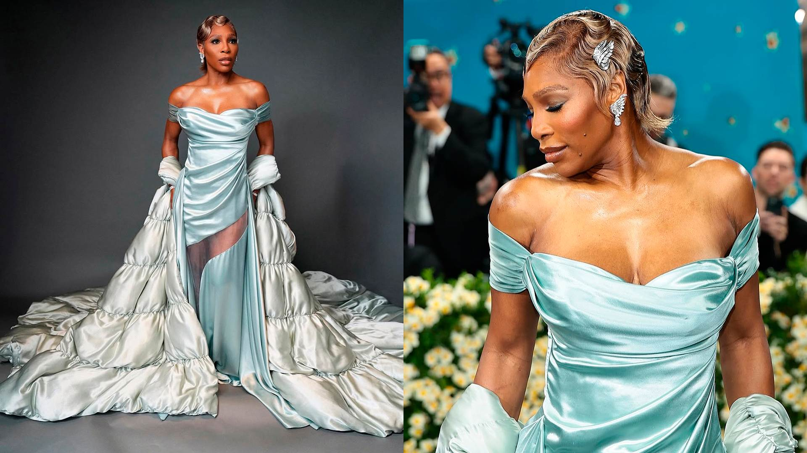
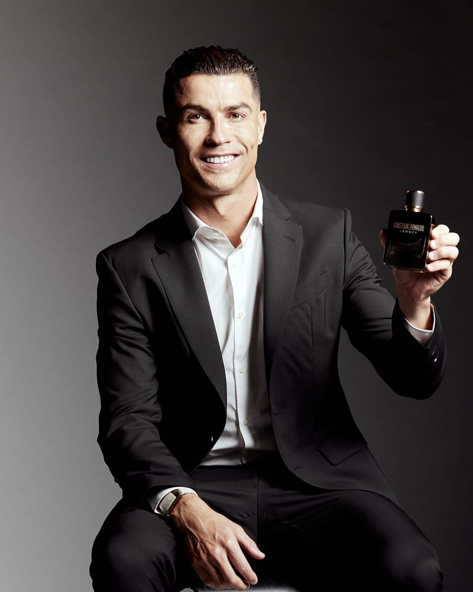
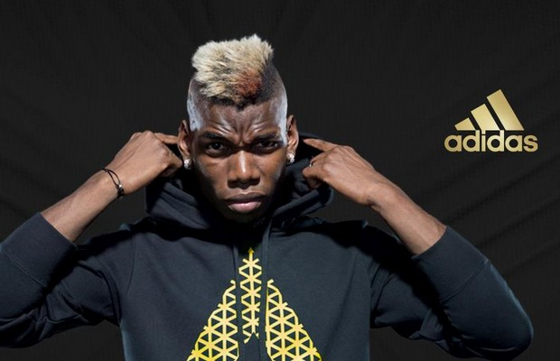

Dans ce nouveau chapitre où le sport et la mode s'entremêlent, une génération d'athlètes a transcendé son rôle d'ambassadeur pour devenir de véritables créateurs. Loin des simples partenariats publicitaires, ces icônes construisent des empires stylistiques où chaque collection raconte leur histoire. Découvrez comment quatre légendes contemporaines ont marqué de leur empreinte l'industrie de la mode.
Serena Williams : La Pionnière Engagée
La légende du tennis, détentrice de 23 titres du Grand Chelem, a apporté à la mode la même détermination qui a fait sa carrière sportive. Avec S by Serena (2018), elle crée bien plus qu'une marque de vêtements : un mouvement en faveur de l'inclusivité.
Ses collections, disponibles de la taille XXS au 3XL, mélangent élégance et fonctionnalité sportive. Les matières techniques côtoient les silhouettes sophistiquées, comme dans cette robe fourreau stretch portée par Michelle Obama lors d'un sommet international. En trois ans seulement, la marque a atteint une valorisation de 10 millions de dollars, avec des pièces devenues cultes comme le blazer "Power Stretch" ou la robe "Grand Slam".
"Je dessine pour les femmes réelles, celles qui veulent se sentir fortes et belles sans compromis"

Cristiano Ronaldo :L'Architecte de Marque
Le quintuple Ballon d'Or a bâti l'une des marques personnelles les plus lucratives du sport moderne. CR7, lancé en 2016, est devenu un empire couvrant lingerie premium, chaussures lifestyle et même hôtellerie.
Sa ligne de sous-vêtements, avec ses matières microfibres et ses coupes ergonomiques, génère 50 millions d'euros de chiffre d'affaires annuel. Les sneakers CR7, directement inspirées de ses crampons signature, intègrent des technologies comme la semelle "SpeedFrame" pour un style dynamique. Chaque collection est présentée comme un chapitre de sa carrière, comme la série "Made of Greatness" célébrant ses records.
Avec son armée de 500 millions de followers, Ronaldo a créé un modèle où chaque produit prolonge son récit personnel de perfectionnisme.

Lebron James : Le Pont Culturel
La superstar de la NBA a transformé son influence en plateforme culturelle. À travers Uninterrupted (2015) et ses collaborations Nike, il redéfinit ce que peut être une marque d'athlète.
Ses sneakers, comme les LeBron 20, combinent innovations techniques (coussin Zoom Air, tige en knit) et références culturelles (hommage à Akron, sa ville natale). Mais LeBron va plus loin avec "The Shop", son émission où sport, musique et société se rencontrent autour de conversations brutes. Sa SpringHill Company produit des contenus qui, comme sa ligne de vêtements, célèbrent l'ambition et la communauté.
Son premier contrat Nike à 90 millions de dollars, signé avant même son premier match en NBA, annonçait déjà l'émergence d'un entrepreneur visionnaire.


Paul Pogba : Le Fusionniste
Le milieu de terrain français a apporté à la mode la même créativité qui illumine les terrains. Sa collaboration 2021 avec Adidas et Palace a marqué les esprits par son audace culturelle.
La collection, vendue en 10 minutes, fusionnait l'héritage footballistique (éléments rappelant les crampons Predator) avec des motifs inspirés de ses racines guinéennes et l'esthétique skate de Palace. Pogba lui-même a participé au design des pièces, comme ce survêtement aux motifs kente revisités ou ces sneakers aux couleurs du drapeau guinéen.
À travers ses tenues avant-gardistes et ses coiffures iconiques, Pogba prouve que pour la nouvelle génération, la mode est un langage à part entière.


L'Héritage en Marche
Cette nouvelle génération d'athlètes-créateurs partage trois traits distinctifs :
- Authenticité : Ils créent des pièces qui leur ressemblent, loin des partenariats superficiels
- Innovation : Leurs collections intègrent des technologies issues du sport
- Ambition : Ils construisent des marques destinées à leur survivre
Comme le résume Serena Williams : "Nous ne voulons plus juste porter des vêtements - nous voulons écrire l'histoire de la mode." Une révolution qui ne fait que commencer.
Ce tableau met en lumière la fulgurante ascension des athlètes-créateurs, révélant comment leur excellence sportive s'est métamorphosée en véritable sensibilité mode, à travers des marques audacieuses qui transcendent les frontières entre stades et podiums.
| Athlète | Marque | Spécificités | Chiffres clés | Citation |
|---|---|---|---|---|
| Serena Williams Tennis (23 Grand Chelem) |
S by Serena (2018) |
|
Valorisation : 10M$ en 3 ans |
"Je dessine pour les femmes réelles, sans compromis" |
| Cristiano Ronaldo Football (5 Ballons d'Or) |
CR7 (2016) |
|
CA annuel : 50M€ Followers : 500M+ |
"Chaque produit raconte mon histoire" |
| LeBron James Basketball (4x MVP NBA) |
Uninterrupted + Nike |
|
1er contrat Nike : 90M$ Ventes LeBron 20 : 120M$ |
"Plus qu'une marque, un mouvement culturel" |
| Paul Pogba Football (Champion du Monde) |
PP x Adidas x Palace |
|
Ventes : 10 minutes pour sold out |
"La mode est mon second terrain de jeu" |
Points communs : Authenticité | Innovation technologique | Ambition entrepreneuriale
Les informations présentées dans ce tableau proviennent de Wikipedia.
"Cette vidéo incarne parfaitement la thèse centrale de notre travail : à l'image de ces athlètes devenus icônes de style, évoluant avec aisance entre les terrains de sport et les tapis rouges des plus grands galas mondiaux, nous démontrons comment la frontière entre performance sportive et création mode s'est définitivement effacée, donnant naissance à une nouvelle ère où le vestiaire athlétique inspire les podiums, où les collaborations inédites entre champions et maisons de luxe réinventent les codes, et où chaque tenue raconte désormais une histoire bien au-delà du simple sponsoring - une histoire d'audace, d'identité culturelle et de révolution stylistique."